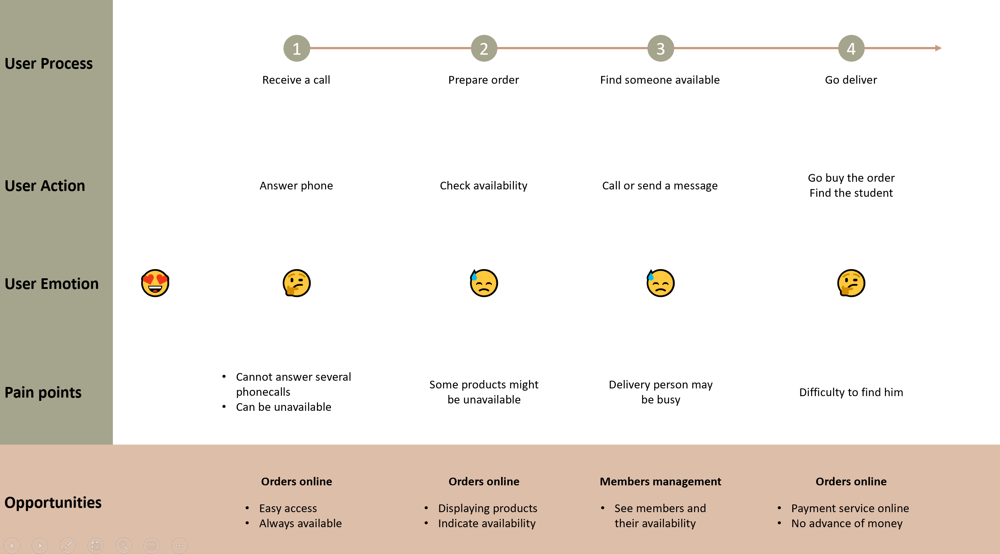

Rallye is a concept app, to be use by student association candidates, to improve and simplify their delivery process during the associations election campaign.
Create a scalable and adaptable app to sell as a Saas to associations candidates.
Every year in Audencia (a French Business School in Nantes), groups of students apply to be members of the school associations. A group of candidates is called a "liste". To be elected, a liste must "impress" students by offering services to them. Listes invests a lot of money on the services they want to propose but the delivery solution is a bit flawed. Until now students had to phonecall the liste to get a delivery.
To conduct my discovery process I started by interviewing students on how they act if they want to pass an order, I watched them realise the process and I observed pain points. It requires to already have the phone number or go look for it (which takes approximately 1 minute). The ordering process is in average 2 minutes long. Since there are only 2 different numbers available, it happens that you don't have any answer and may have to call back. The main problem result in the fact you must ask what are the available services (which can again take 1 minute). It can be hard to be identify by the group member who will deliver the order.
I then interviewed some liste members on how they take and deliver an order and I choosed to create a user journey to analyze the whole process. Thanks to this support I confirmed my thoughts than an app would be a great help for the students that I interviewed but also for the liste members.
Later I discovered than for the first time a liste built a no-code app for this exact purpose. I choose to analyze their solution. It is obvious that this app really helps both sides on the process, therefore I think the general design could be improve. Also by talking with the list members it appears that some features like a dashboard for the liste to allow it to manage its budget, members and eventually a to do list for the tasks to accomplish could be useful.
To decompose the whole current process I created the current app user flow, and my goal will be to improve it.
To begin, I choose to work on the students side of the app. I choosed to analyze what would improve the seamlessness of the experience. I tried to compile the results of the different interviews I did. In result, I added a quantity field and also an address field. The problems encountered were that sometimes students order for the whole class but they cannot precise how much they are, also they need to send an additional message to precise where to receive their order. The flow was interrupted and needed to be improve. I then choose to work on the following minimalist wireframe to cover this problems. Today I'm still working on this wireframe especially how to improve the current problems : There is no indicators of the availability of a product. The whole process is 4 clicks longer than the flow with the no-code app